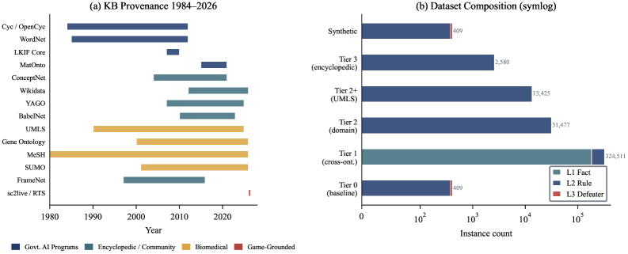
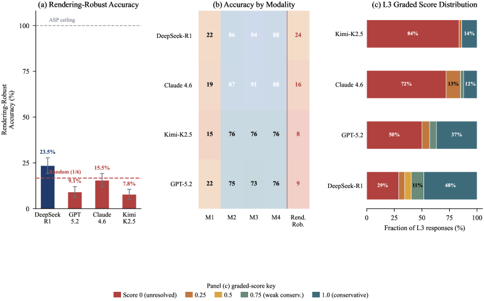
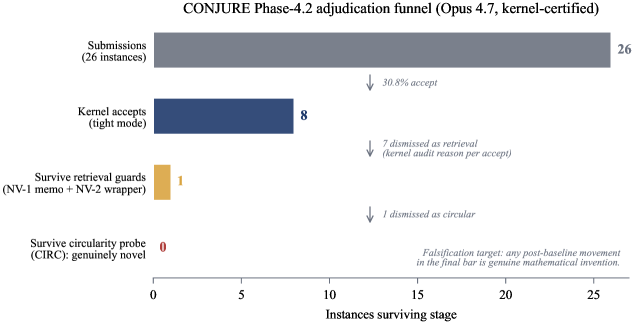

The CONJURE track uses Lean 4/Mathlib as a kernel verifier for 560 transformative-creativity instances whose gold answers are new definitions.
Abstract
A rule-based logic solver resolves every instance in our benchmark in under 50 microseconds with 100% accuracy; the best frontier language model reaches 65% at best and drops to 23.5% under rendering-robust evaluation (worst case over four surface renderings). We introduce DeFAb (Defeasible Abduction Benchmark), a dataset and generation pipeline that converts four decades of publicly funded knowledge bases into formally grounded instances for defeasible abduction: constructing hypotheses that explain anomalies by overriding defaults while preserving unrelated expectations. Because every hypothesis must pass polynomial-time checks for valid derivation, conservativity, and minimality, DeFAb makes logical rigor the instrument for measuring creativity and theoretical reasoning, scoring the disciplined construction of theory revisions rather than fluent but theory-destroying prose. The pipeline pairs taxonomic hierarchies (OpenCyc, YAGO, Wikidata) with behavioral property graphs (ConceptNet, UMLS) to produce 372,648+ instances across 33.75M materialized rules from 18 sources, in three levels with polynomial-time verifiable gold standards. Four frontier models do not reliably internalize defeasible reasoning: rendering-robust Level 2 accuracy is 7.8-23.5%; chain-of-thought variance ( 36 pp) exceeds any inter-model gap; and a matched contamination control isolates a +19.4 pp Level 3 gap. We further release DeFAb-Hard (a 235-instance Level 3 difficulty variant; best model 53.3% vs 100% symbolic) and CONJURE (a kernel-verified transformative-creativity variant of 560 Lean 4/Mathlib instances whose gold answers are definitions the proof kernel did not previously contain, judge-free verifier; a pilot finds zero novel concepts). The same verifier doubles as an exact reward for preference optimization (DPO, RLVR/GRPO). Released under MIT at https://huggingface.co/datasets/PatrickAllenCooper/DeFAb.
Problem
Whether frontier language models can perform defeasible abduction with formal rigor, and the lack of benchmarks that verify the logical validity of such reasoning rather than its fluency.
Approach
DeFAb converts decades of public knowledge bases into abduction instances whose hypotheses must pass polynomial-time checks for valid derivation, conservativity, and minimality. The CONJURE track is built on Lean 4 and Mathlib: each accept verdict is a kernel-elaboration certificate with no human grader, LLM judge, or learned reward in the loop, and gold answers are Lean definitions the kernel did not previously contain.

Figure 3: (a) Provenance timeline of 18 knowledge base sources spanning 1984 (Cyc) to 2025 (UMLS 2025AB), color-coded by source class: government AI programs (blue), encyclopedic / community (teal), biomedical (gold), and game-grounded (red). (b) Dataset composition by tier and instance level on a symlog scale. Tier 1 (cross-ontology) provides the majority of instances; Level 3 (defeater abduction
Results
A rule-based solver resolves every instance in under 50 microseconds at 100% accuracy, while the best frontier model reaches 65% and drops to 23.5% under rendering-robust evaluation. The CONJURE pilot found zero novel concepts.

Figure 4: (a) Rendering-robust accuracy per model (worst case over M1–M4). Bars in red are at or below the 16.7% random-chance baseline (dashed); all four models are far below the ASP symbolic ceiling (100%, upper dashed). Two of four frontier models cannot beat random chance on the headline metric. (b) Accuracy by rendering modality M1–M4 plus rendering-robust column. All models score 73–94% on f

Figure 8: The CONJURE pilot adjudication funnel ( claude-opus-4-7 , 8K-token hard cap). Every stage is a kernel-certified filter: 26 hint-stripped submissions yield 8 tight-mode kernel accepts ( 30.8\% ); the principled CNS verdict dismisses 7 as retrieval (memo match or cosmetic wrapper) and 1 as circular, each with a Lean-level audit reason, leaving 0 genuinely novel. The final bar is the falsif